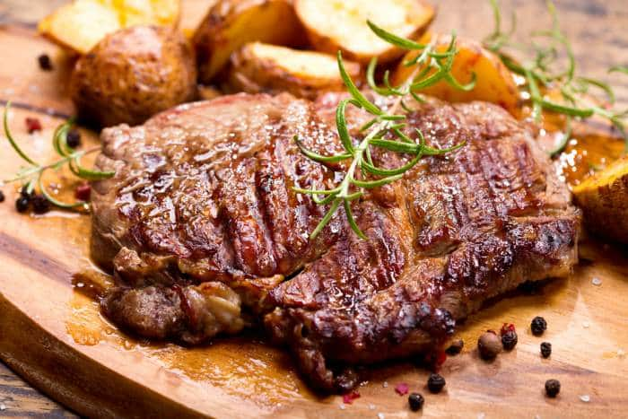

La Mejor Parrilla
Para los amantes de la parrilla
Favoritos:
Historial:
Carne a la Parrilla en 5 Pasos
15 de Octubre del 2018
Paso #1: Si los filetes son gruesos o ligeramente gruesos (de 2,5 centímetros o más), ablandar las fibras musculares, de esta forma nuestra carne a la parrilla quedará extra tierna.
Paso #2: En una bolsa de congelación tipo Zip añade la carne, y luego los ingredientes del adobo o marinado. Deja que reposen a temperatura ambiente unos 20 o 30 Minutos.
Paso #3: Enciende la parilla, a fuego lento, 10 Minutos antes de finalizar el reposo. Cocina los filetes a la parrilla, si quieres puedes agregar media cucharadita de aceite (o de mantequilla).
Paso #4: El tiempo de cocción de la carne depende de su grosor y el gusto personal. Si te gusta la carne poco hecha serían unos 1,5 minutos por lado (si tiene 2,5 cm de grosor, cuanto más gruesa aumenta el tiempo). Si prefieres la carne en su punto serían 2,5 minutos, para carnes muy hechas nos vamos a unos 3.5 minutos por lado. No pinches la carne para darle la vuelta, usa una espátula.
Paso #5: Una vez cocinada deja que repose unos 5 Minutos antes de servir, estará mas sabrosa.
Buen provecho...

Usuario1: Excelente receta, fácil y rápido.

Usuario2: Gracias por compartir, vamos a intentar.
Pinchos de Camarón con Maracuyá
01 de Octubre del 2018
Esta receta de pinchos de camarón a la parrilla se prepara con camarones marinados en una salsa de maracuyá y achiote. Esta receta de camarones lleva varios de mis ingredientes favoritos. Para empezar me encanta cocinar con camarones. Pueden ser utilizados en muchos platillos diferentes: ensaladas, ceviches, empanadas, arroces, sopas, y más. También me encantan las maracuyas, me parece que la combinación de maracuya + camarón es riquísima, así que preparé un adobo de maracuya para los camarones. Este adobo también tiene otro de mis ingredientes favoritos: achiote. El achiote se utiliza en muchos platos tradicionales latinos, a veces simplemente se le llama “color”, ya que añade un color anaranjado rojizo a los alimentos.
Usuario1: Excelente receta, una combinación realmente deliciosa.
Usuario2: No puedo esperar a probar esta receta. Gracias.
Usuario3: Amo los camarones y salsitas de maracuyá, esta receta me viene bien. Muchas gracias.